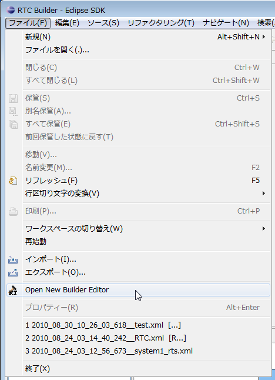

インストールおよび起動
✏️ Edit this page on GitHubContents
init #contents(4) ここでは、RTCBuilder のインストールおよび起動方法について説明します。
RTCBuilder のインストール
RTCBuilder は Eclipse プラグインであるため、 Eclipse 本体および依存している他の Eclipse プラグインをまずインストールする必要があります。 インストールに関しては、OpenRTM Eclipse tools のインストール を参照願います。
RTCBuilder の起動
インストール後、Eclipse を初めて起動すると、以下のような「ようこそ」画面が表示されます。

この「ようこそ」画面左上の「X」ボタンをクリックすると、以下のページが表示されます。
右上の [Open Perspective] ボタンをクリックし、プルダウンから「その他」を選択します。

「RTC Builder」を選択し、[OK] ボタンをクリックします。

RTCBuilder が起動します。

RTC プロファイルエディタの起動
RTC プロファイルエディタを開くには、ツールバーの [Open New RtcBuilder Editor] ボタンをクリックするか、メニューバーの [ファイル] > [Open New Builder Editor] を選択します。
 |
 |
| ツールバーから Open New RtcBuilder Editor | ファイル メニューから Open New Builder Editor |
{kind=link}
表示された新規プロジェクト作成ダイアログにて、プロジェクト名を入力します｡

ここで作成したプロジェクト配下に RTCBuilder を用いて生成したコード､ RTCProfile などが保存されます｡
プロジェクトは､デフォルトでは使用しているワークスペース配下に(｢ロケーション｣に設定されたディレクトリー内)作成されます｡
任意の場所にプロジェクトを作成したい場合には､｢デフォルト・ロケーションの使用｣チェックボックスを OFF にし､｢ロケーション｣にて場所を指定してください｡
指定した名称のプロジェクトが生成され、パッケージエクスプローラー内に追加されます。
{kind=link}
生成したプロジェクト内には、デフォルト値が設定された RTC プロファイル XML(RTC.xml) が自動的に生成されます。
hogeee---002